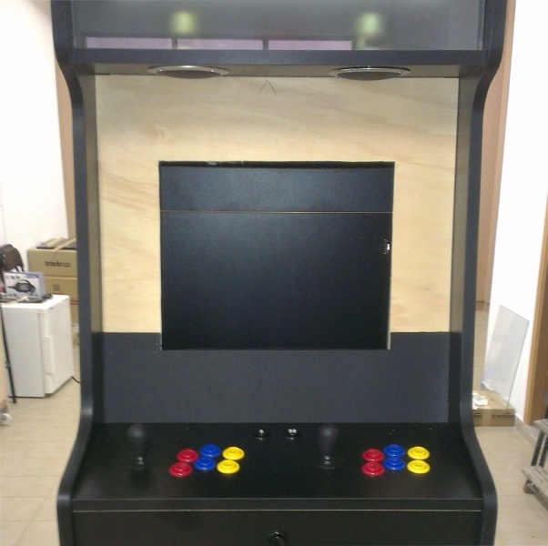

Capítulo 6.13 Construcción de máquina recreativa - Mueble - Bezel
Para el bezel he usado una chapa de 4 milímetros de grosor forrada en su parte visible con cartulina negra.
El agujero del monitor lo he hecho exactamente en el centro de la chapa y es del tamaño del interior del marco del monitor, de esta forma se evita que se vea.
Se ha dejado una pequeña solapa de cartulina dentro del agujero del monitor para que no se vea el marco de este.

Figura 6.13.1 Bezel con la parte de abajo forrada

Figura 6.13.2 Bezel acabado y montado